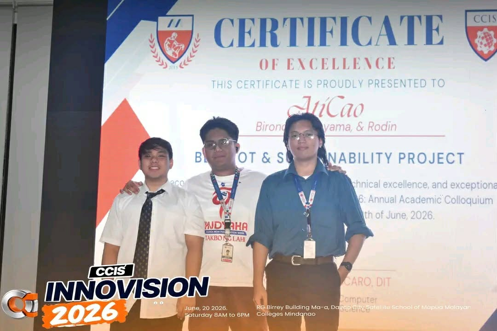
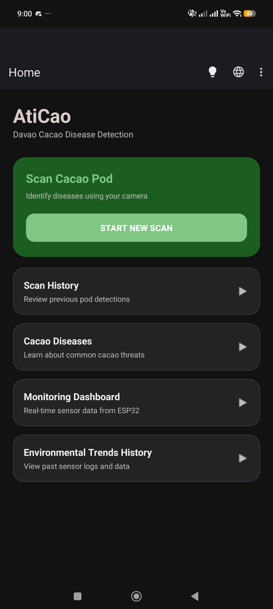
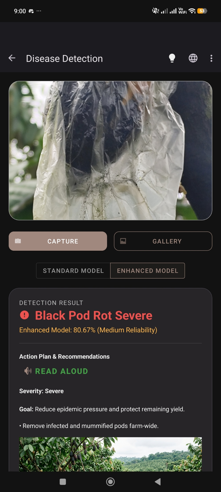
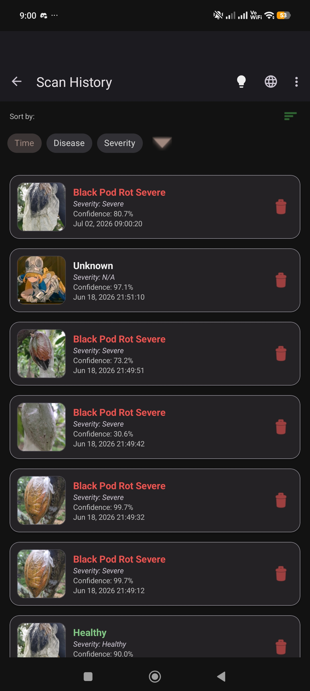
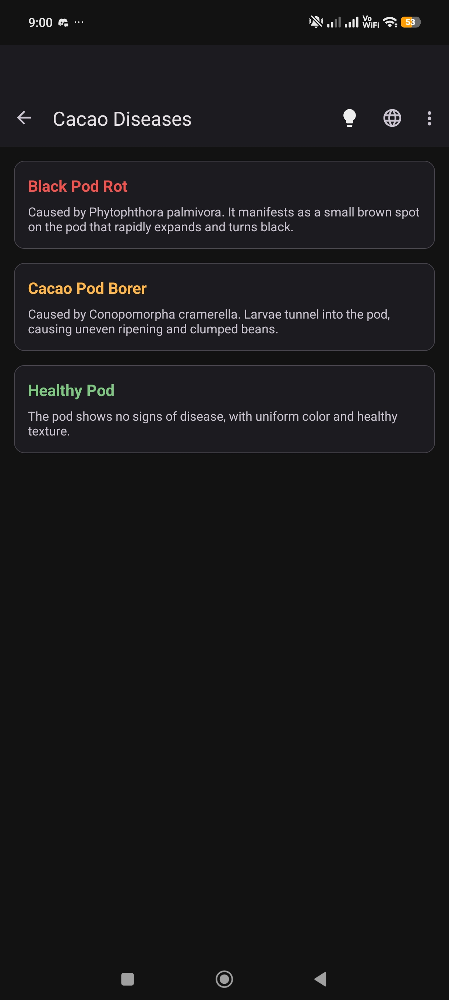
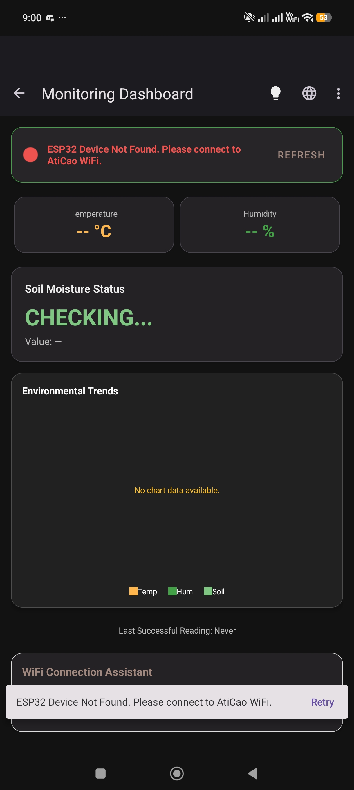
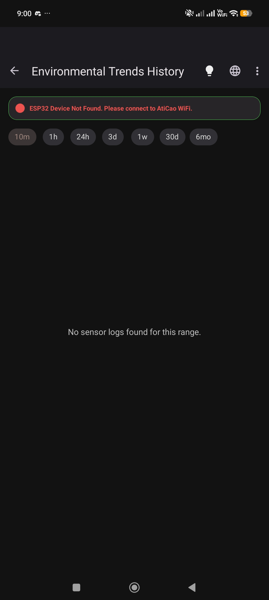
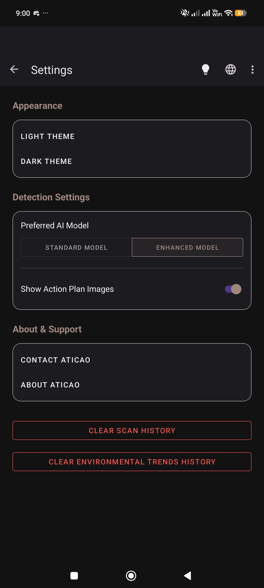
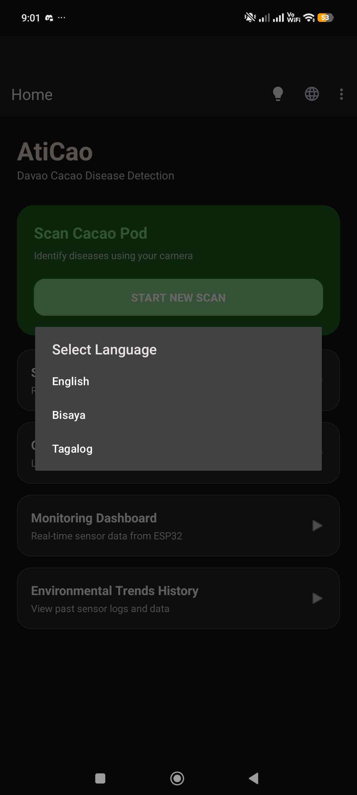

An App/IoT monitoring system classifying 8 distinct cacao health categories via custom Roboflow datasets, providing real-time disease diagnostic metrics.
Reflection
Working on AtiCao pushed me to bring together everything I learned from Human-Computer Interaction, Application Development and Emerging Technologies, Computer Architecture and Organization, and Introduction to Data Science into one working system as a team. Making an app that still works offline, reading sensor data and classifying pod images without needing the internet, taught me how much planning goes into building technology that ordinary farmers can actually rely on. Standing on stage at CCIS InnoVision 2026 and hearing AtiCao named Best IoT and Sustainability Project was a proud & unexpected moment for us, but the bigger lesson came from the process itself: debugging the model, calibrating the ESP32 readings, and learning to explain technical decisions clearly with my teammates. I came out of it with more patience, better teamwork, and a clearer sense of the kind of work a developer has to make with a team.
Project Photo View View ScreenshotsHide Screenshots







